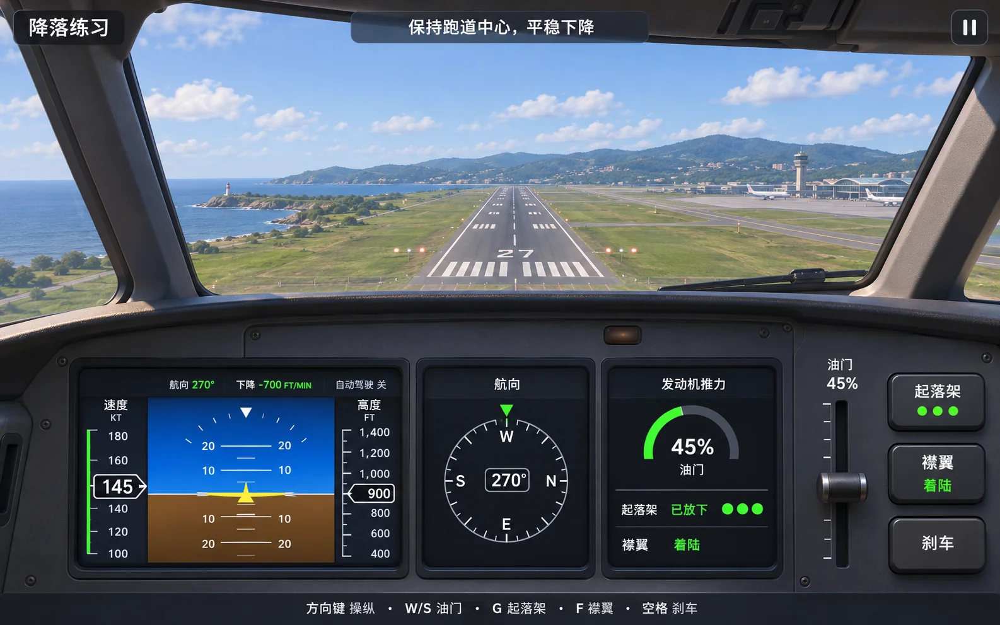
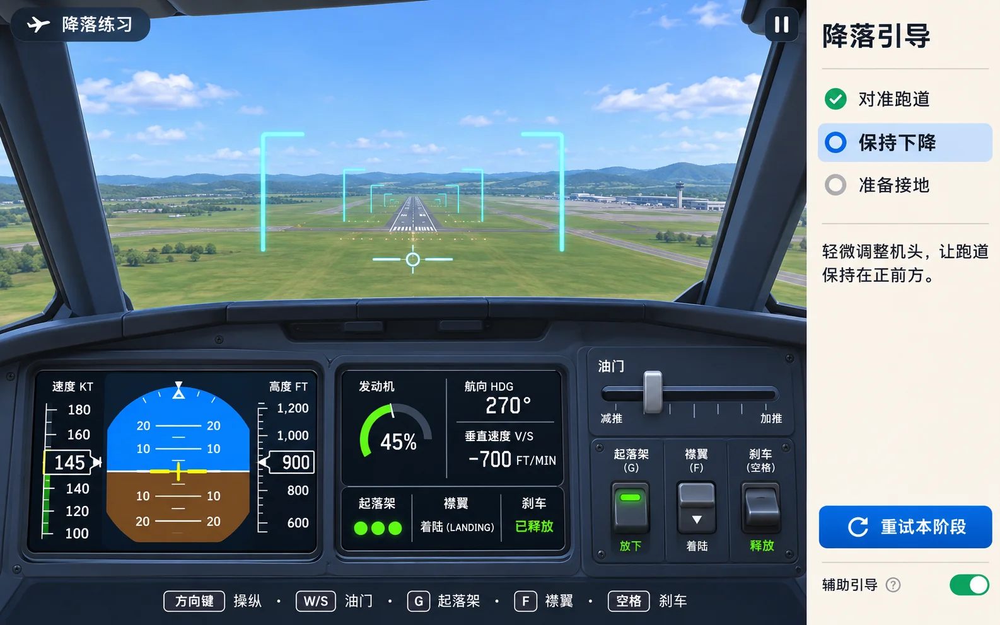
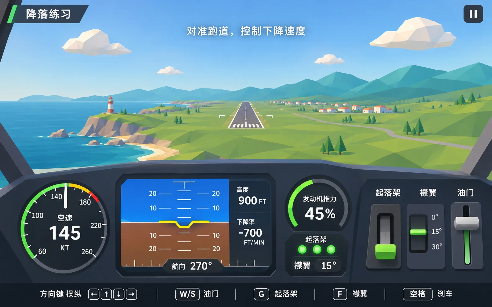

飞行模拟 · 设计草案
三张图依次对应方案 1、2、3。点击图片可打开原图放大查看。这些是视觉概念图，尚未接入游戏操作。
1 · 沉浸式驾驶舱
查看原图
强调驾驶舱氛围，主要仪表与操作集中在下方，窗外保留宽阔视野。

2 · 教学辅助驾驶舱
查看原图
增加飞行引导标记与阶段提示，方便新手理解降落步骤。

3 · 轻量低多边形驾驶舱
查看原图
简化场景和材质，放大核心仪表，采用轻松直观的游戏风格。

三张图依次对应方案 1、2、3。点击图片可打开原图放大查看。这些是视觉概念图，尚未接入游戏操作。
强调驾驶舱氛围，主要仪表与操作集中在下方，窗外保留宽阔视野。

增加飞行引导标记与阶段提示，方便新手理解降落步骤。

简化场景和材质，放大核心仪表，采用轻松直观的游戏风格。
